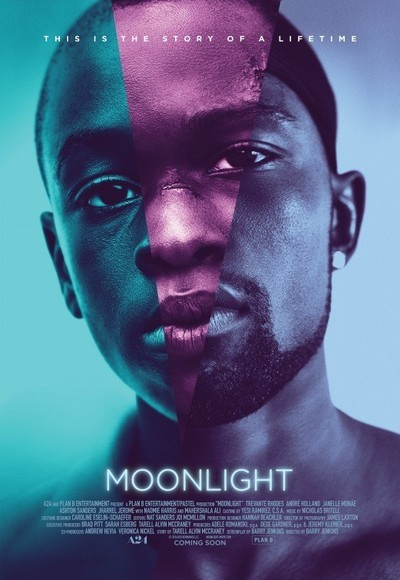

| Categories |
1970 |
2010 |
| Posters |
 |
 |
| Title |
Apocalypse Now |
Moonlight |
| Director |
Francis Coppola |
Barry Jenkins |
| Producer(s) |
Francis Coppola |
Adele Romanski, Dede Gardner, Jeremy Kleiner |
| Writer(s) |
John Milius, Francis Coppola |
Barry Jenkins, Tarell Alvin McCraney |
| Actors |
Marlon Brando, Robert Duvall, Martin Sheen, Drederic Forrest, Albert Hall, Sam Bottoms, Larry Fishburne, Dennis Hopper |
Trevante Rhodes, André Holland, Janelle Monáe, Ashton Sanders, Jharrel Jerome, Naomi Harris, Mahershala Ali |
| Cinematographer |
Vittorio Storaro |
James Laxton |
| Description |
In Vietnam in 1970, Captain Willard (Martin Sheen) takes a perilous and increasingly hallucinatory journey upriver to find and terminate Colonel Kurtz (Marlon Brando), a once-promising officer who has reportedly gone completely mad. In the company of a Navy patrol boat filled with street-smart kids, a surfing-obsessed Air Cavalry officer (Robert Duvall), and a crazed freelance photographer (Dennis Hopper), Willard travels further and further into the heart of darkness. |
A look at three defining chapters in the life of Chiron, a young black man growing up in Miami. His epic journey to manhood is guided by the kindness, support and love of the community that helps raise him. |
| Release Date |
August 15th, 1979 |
October 21, 2016 |